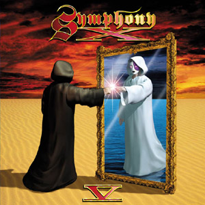
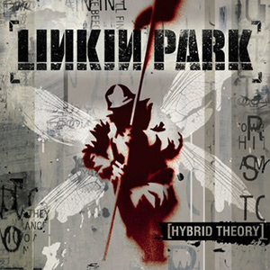
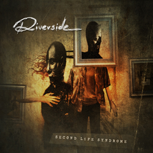
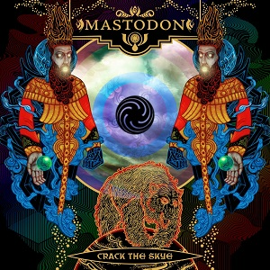
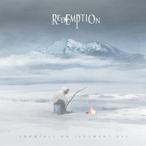

Classic albums from the 00s
Symphony X
V

- Release date: 10 October 2000
- Genre: Progressive Metal
- Read more on Wikipedia
Linkin Park
Hybrid Theory

- Release date: 24 October 2000
- Genre: Nu Metal
- Read more on Wikipedia
Kamelot
The Black Halo
- Release date: 15 March 2005
- Genre: Power Metal
- Read more on Wikipedia
Riverside
Second Life Syndrome

- Release date: 31 October 2005
- Genre: Progressive Metal
- Read more on Wikipedia
Mastodon
Crack The Skye

- Release date: 24 March 2009
- Genre: Progressive Metal
- Read more on Wikipedia
Redemption
Snowfall On Judgment Day

- Release date: 6 October 2009
- Genre: Progressive Metal
- Read more on Wikipedia